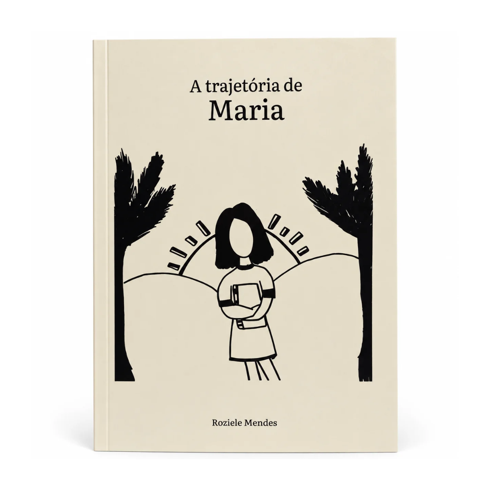

Lançamento
Novo livro
A trajetória de Maria
A trajetória de Maria conta a história de uma menina sonhadora que guarda um segredo que pode influenciar sua própria vida, a de seus familiares e a de toda a comunidade do campo em que vive.
Durante sua jornada, ela enfrenta dúvidas sobre seu caminho e se questiona se realmente vale a pena lutar pelo seu sonho, pensando até mesmo em descumprir um juramento feito com seus amigos.
Até que um acontecimento responde todos os seus questionamentos e muda sua forma de enxergar o futuro.
Comprar agora
Compra segura pela loja oficial da autora.